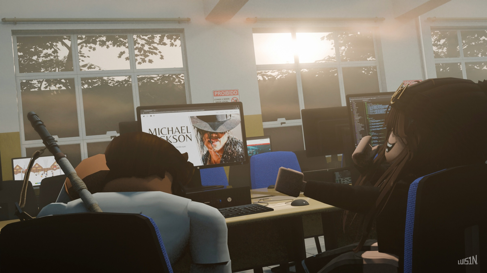
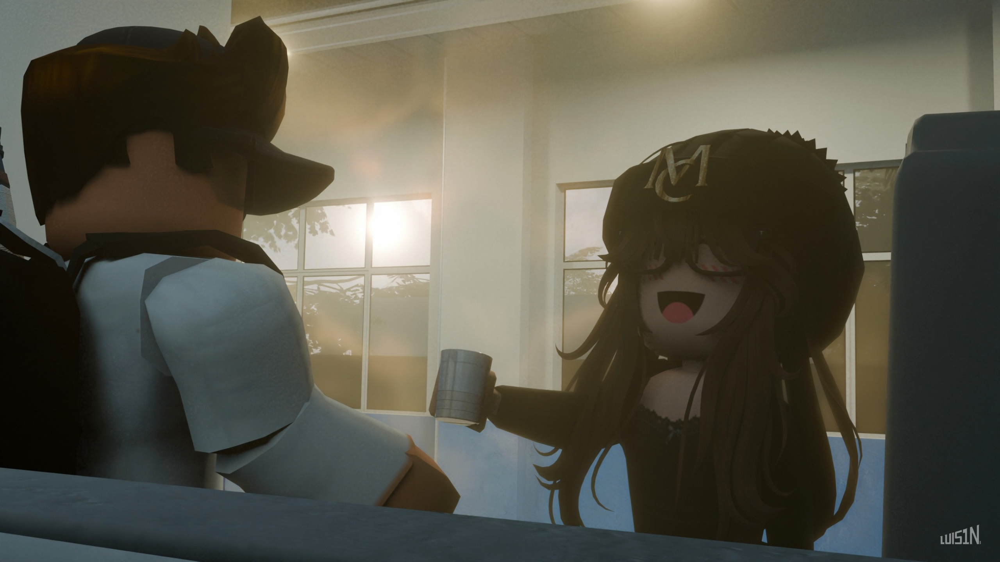

eae
sitezinho bem basics só pra dizer que eu te amo kkskks
Meu Deus do céu mb, esses foram, sem dúvidas, os 2 meses mais incríveis ( e mais rápidos ) que eu sequer imaginaria viver. Pensar que a senhorita nunca hesitou em se esforçar para que o nosso "nós" continuasse dando certo me faz querer questionar, COMO RAIOS EU consegui alguém como você.
sempre brinquei com as diferenças entre meninas e mulheres, e desde que estou com você, essa distinção passou a ficar cada vez mais clara, evidenciando o fato de que enfim encontrei a pessoa certa, a única possível. O teu jeito gentil, responsável, muitas vezes engraçado e definitivamente MUITO FOFO só reforça tal ideia, o que me faz sentir extremamente seguro pra dizer que Nunca Foi tão Fácil te amar e que, a cada dia que passa, eu te amo mais.
Você virou a minha vida de cabeça pra baixo nesses ultimos 2 meses, positivamente ( obviamente ), eu realmente não esperava viver algo assim, mas agradeço de coração tudo que fez e ainda faz pra nos tornarmos melhores, tanto como pessoas quanto como casal. E claro, também gostaria de dizer que estou e sempre estarei disposto a me dedicar pra tornar essa, a nossa melhor vida possível.
De todo e qualquer modo, eu te amo, te amo muito, Camille.
Representando parte do meu presente, temos a tão pedida ( por você só né 😒 ) playlist que eu montei de forma 392% séria com músicas delicadamente selecionadas pra você entender quais tipos de som eu costumo ouvir. Trouxe uma palhinha de cada estilo musical pra te mostrar O QUANTO EU SOU ECLÉTICO KKKKKKK ( tem algumas zoeiras aqui... )
Bem, modelar tudo isso aqui deu MUITO mais trabalho do que parece, tanto que infelizmente não deu tempo de terminar a ULTIMA foto 😭 ( quem sabe eu a termine no próximo dia 11... ). De qualquer forma, as 2 renderizações estão aí caso queira baixar sla

Este foi o fatídico dia em que perdi ( muito injustamente ) a porcaria da aposta da fanpage. Devo admitir que já esperava que a senhorita ganhasse, pois desde o site da empresa eu já sabia que ce tava em um nível muito acima do meu. PORÉM KKKKKK, eu só perdi tão feio assim pq eu fiz aquele site correndo hhahahhahahahahahah.
Foram tantas que eu até parei de contar slk. Mas pra te dar uma ideia, eu comecei a fazer isso semana retrasada kkkk ( 😰 )

Possívelmente o dia eu que eu mais gostaria de reviver ( caso fosse possível ), o famigerado primeiro café. DETALHE: a regente tava junto nessa parte, mas 2 coisas aconteceram e fizeram com que eu não colocasse ela aí kk: 1º-Tempo curto; 2º-Eu percebi que não me importo
Eu demorei tanto pra fazer a renderização anterior que eu simplesmente não tive tempo de planejar/detalhar essa 2ª imagem ( nota-se a queda de qualidade em comparação com a anterior ). Gastei por volta de 4-5 horas reutilizando assets da renderização anterior, por isso foi bem mais rápido.
- Te amo muito, meu bem -